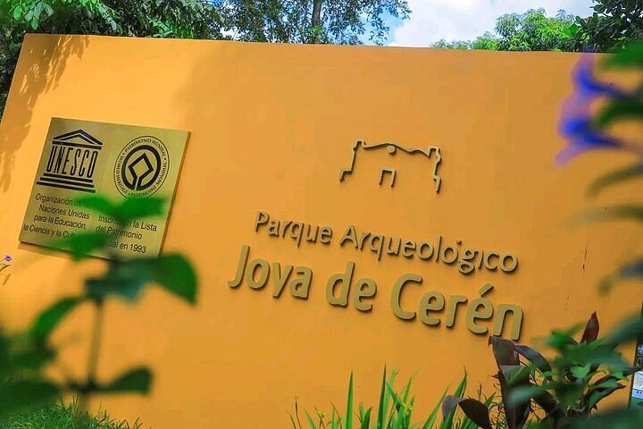
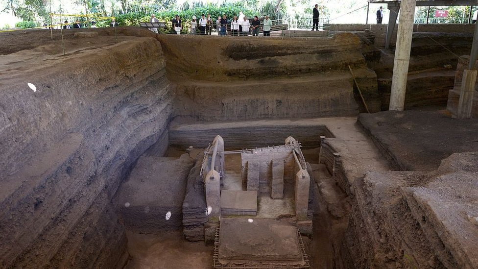

¿Qué podremos encontrar acá?
Es el único sitio arqueológico de Latinoamérica declarado Patrimonio de la Humanidad por preservar la vida cotidiana maya, no solo templos.
Bienvenidos a **CulturaXR**, una plataforma de realidad aumentada que transforma la forma en que turistas nacionales e internacionales descubren la riqueza cultural de El Salvador, ofreciendo experiencias inmersivas que conectan la historia, el patrimonio y la tecnología en un solo recorrido.

Descubre un Patrimonio de la Humanidad. Vive una experiencia inmersiva en la Joya de Cerén, donde la realidad aumentada revela la historia, la cultura y la vida cotidiana de una antigua comunidad maya, acercando el pasado a cada visitante.
Conecta con el legado de nuestros antepasados. Explora piezas arqueológicas, reliquias y objetos históricos mediante una experiencia interactiva que combina la riqueza cultural de El Salvador con tecnología de realidad aumentada, haciendo que cada visita al museo sea más educativa e inolvidable.

Transformamos la manera de descubrir el patrimonio cultural de El Salvador. Con CulturaXR, los visitantes pueden explorar sitios históricos mediante realidad aumentada, visualizando reconstrucciones digitales, aprendiendo sobre su historia e interactuando con el entorno como nunca antes. Cada recorrido se convierte en una experiencia inmersiva que conecta tecnología, cultura y turismo.
Patrimonio de la Humanidad
La "Pompeya de América": una aldea maya sepultada por ceniza volcánica hace más de 1,400 años, preservada casi intacta.
Es el único sitio arqueológico de Latinoamérica declarado Patrimonio de la Humanidad por preservar la vida cotidiana maya, no solo templos.
Activá la experiencia y descubrí sobre este lugar